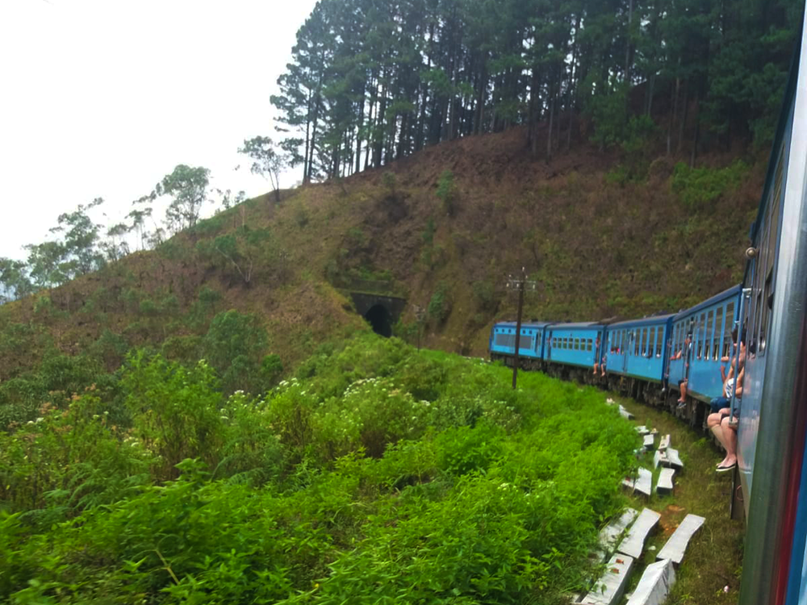
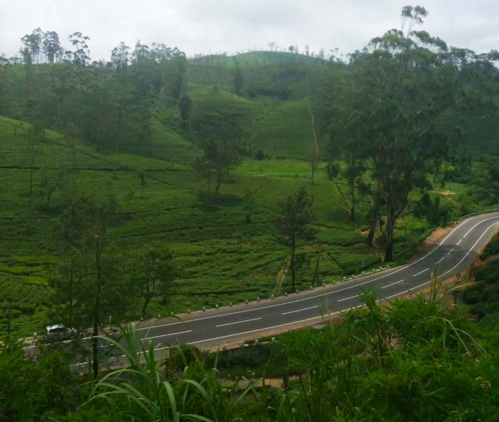

Een van de mooiste treinritten ter wereld: een groene reis door Sri Lanka

Gereisd in: Augustus 2018
Hieronder heb ik dag 6 van mijn twee-weekse reis door Sri Lanka beschreven. Op deze dag maakte ik een treinreis van Kandy naar Ella. Ik was benieuwd of het waar was wat er gezegd werd over dit traject!
"Vanochtend ben ik vroeg opgestaan om hopelijk een plek te kunnen bemachtigen in de trein van Kandy naar Ella. Deze rit staat bekend als een van de mooiste treinritten ter wereld! Ik sta op het station en koop een treinkaartje maar ik zie al snel dat ik niet de enige ben. Het traject Kandy-Ella is razend populair. Op beide perrons zie ik al vele backpackers. Ik voel een strijd aankomen en wanneer de trein aankomt, gaat iedereen klaar staan om te vechten voor een plaatsje, wat Sri Lanka toch niet helemaal anders maakt dan hoe het in Nederland gaat. Alle zitplaatsen zijn al bezet en dan moeten al deze mensen er ook nog bij? Hoe gaat dat nou passen? Nou, door te proppen want de treinen in Sri Lanka raken nooit vol. Ik voel me net een sardientje. In de trein is er ook een wasruimte, of eigenlijk was er een wasruimte, want nu wordt deze ruimte gebruikt om bagagestukken op elkaar te stapelen zodat er nog meer mensen bij kunnen. De eerste vijf uur van de treinreis heb ik moeten staan, waarbij ik wel een prachtig uitzicht had vanuit het raam in de tussenruimte. Het staan is het zeker waard, want onderweg zie ik ontzettend veel groen en watervallen. Je ziet hier werkelijk van alles, ook mensen die zomaar uitstappen terwijl er niet eens een station is. Oh en spoorlopers! Allemaal dingen die in Nederland echt niet kunnen. Toen de trein aankwam in Nuwara Eliya (wat overigens ook een zeer populaire plek is) stapten de meeste mensen uit maar uiteraard kwamen er ook passagiers bij die de treinrit naar Ella niet wilden missen.

Eindelijk kon ik even zitten en ook nog in de deuropening! Hier geniet je toch het best van de ontzettend mooie uitzichten. Met de Sri Lankaanse muziek op de achtergrond leek het net de droomvlucht in de Efteling. Wel een beetje gevaarlijk om in de deuropening (zonder deur!) te zitten maar supergaaf en lekker koel in tegenstelling tot de binnenkant van de trein. Als er een tunnel aankwam werd het even spannend, dan hield ik mijn beentjes toch maar binnenboord. Mensen in de trein (vooral kinderen) gaan standaard gillen als de trein een tunnel inrijdt en hierdoor lijkt het een beetje op een spooktrein. Het laatste uurtje van de in totaal 7 uur durende rit moesten we toch weer even staan. En dan komen we eindelijk aan in Ella. De stad Ella bevalt me wel gezien het een overzichtelijke en niet te grote stad is. Er heerst hier een leuk sfeertje. De lucht is schoner, het is koeler, het is niet zo druk als in Colombo of Kandy en je wordt niet zo vaak omver gereden of lastig gevallen door verkopers. Ideale en mooie eindbestemming van een treinreis die terecht tot een van de mooiste ter wereld wordt gerekend."
Tips:
Uiteraard heb ik ook de Sri Lankaanse keuken leren kennen tijdens mijn reis. Een van de hoogtepunten vond ik de Kottu, waar roti in verwerkt zit. Hoe je dit thuis maakt vindt je hier .